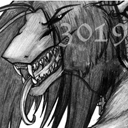

Forums galactiques > Taverne galactique : lieu de discussion informel > IZakaYa - L'alcool encore et toujours...
Pages : 1 2 ... 110 111 112 ... 308 309
| Janus-Jana Réputation à la taverne : 836  09/09 ETU 23:50 | Score : 3 Détails ***
Bonsoir Cher Eras, Je savais que nous devions nous recroiser, que vous finiriez par me rejoindre dans ce lieu de joie et de luxure. Comme c'est votre première visite, observez donc cette ruche toute de rouge décorée, son salon aux canapés rouges en forme de coeur et de bouche, ses geishas et ses princesses des mille et une nuits, ses clients venants de toute la galaxie pour déguster un petit Red Tantra ou acheter quelques pilules rouges, ses chambres à thème, dont la fameuse chambre rouge de la Princesse Médée, et surtout son jardin d'hiver ou la tempérarure est toujours parfaitement propice à l'exhaltation des sens... Que vous inspire ce lieu, qui vous était étranger jusqu'alors ? *** | ||
| Eras Del Sol'enys Réputation à la taverne : 288  09/09 ETU 23:56 | Score : 1 Détails Eras sourit et acquiesce de la tête
« Merci messire TC , c'est un plaisir partagé. » il sourit légèrement puis considère Jana « Ce que m'inspire cet endroit ? Hum ... » il regarde autour de lui et hausses des épaules. « Trop de choses, peut être bien plus qu'il ne faudrait » il sourit faiblement puis secoue la tête. « Cet endroit est a la manière de l'Empire; il y a de tout et en trop grand quantité peut être, mais c'est un plaisir de se trouver ici quand même. et pas seulement pour les sens ... » il se tourne vers Hel « Veuillez m'excusez, je ne me suis pas présenté , je suis impardonnable ... je suis Eras Del Sol'enys, enchanté Dame » | ||
| Hel Réputation à la taverne : 13  10/09 ETU 00:08 | Score : 4 Détails *** Hel, voyant une divinité qui lui était encore inconnue, fut quelques peut surprise…Le monde avait décidément bien changé en son absence. ***
"TC the Unbeliever, je vous remercie de m’avoir apporté un autre verre. Je ne sais pourquoi de tout temps, les Hommes et les Dieux luttent entre eux pour prendre le pouvoir…Je règne sans partage sur le Royaume des Morts, et j’aimerais lutter contre une personne qui voudrait prendre mon trône… Mais, malheureusement, il n’y a aucun candidat… Pour être tranquille, il vaut mieux régner sur quelque chose de peu convoité... Semi-Homme, je vous trouve bien présomptueux, j’ai accepté votre invitation, mais je ne peux satisfaire toute votre curiosité...Disons que je suis ici pour voir le monde tourner ? Janus-Jana, je serais ravie de pouvoir prendre sous ma protection toute relative les âmes récalcitrantes à votre doctrine tantrique..." ***L’entrée de cet homme, Eras, consterna la Déesse des Morts. Elle trouvait bizarre la façon dont ce mortel c’était comporté envers sa personne. Mais, décidant de ne pas en tenir compte, elle le salua à son tour et bu son ver de Laudanum.*** | ||
| Eras Del Sol'enys Réputation à la taverne : 288 10/09 ETU 00:15 | Score : 1 Détails Le jeune homme sourit légèrement et regarde la déesse
« Décidément ... Le monde tourne étrangement, me voilà en bien etonnante compagnie ... deux déité et vous TC ... » il rit doucement et secoue la tête. « Puis je au moins savoir comment vous vous appelez belle Dame, ou belle Déesse ? » il reste songeur en observant Hel. ne semblant pas plus affecté que cela en se trouvant en face d'une déese, il reste toujours calme, souriant légerement. secouant la tête l'air songeur un instant, ses longs cheveux noirs suivant le mouvement. | ||
| Hel Réputation à la taverne : 13 10/09 ETU 00:26 | Score : 0 Détails ***Hel, semblait de plus en plus apprécier la compagnie des personnes peuplant ce monde. Elle s’adressa à Eras, l’air amusée par ce qu’il venait de dire. ***
Je me nomme Hel, certains m’appelle Hela, c’est à vous de voir…Je suis la fille de Loki, je suis une Déesse. Je règne sans partage sur 9 Royaumes, dont celui des Morts. Appelez moi Dame, cela m’amuse de me faire passer pour une simple mortel. Après ces quelques mots, Hel prit son deuxième verre de laudanum est le but d’un trait. L’effet analgésique commençait à se faire sentir. | ||
| Eras Del Sol'enys Réputation à la taverne : 288 10/09 ETU 00:37 | Score : 0 Détails Eras hausses des épaules et acquiesce de la tête.
« D'accord Dame » il la regarde un instant songeur. « Une simple mortelle ... hum ... vous ne passeriez certainement pas pour une 'simple' mortelle avec cette apparence sublime je crois » il sourit légèrement et hausses des épaules. « Pour ce qui est de régner je comprend a peu prés ... mais je ne crois pas que je puis integrer aussi facilement certaines des ... particularité dues a votre statut de Déesse, Enfin il est amusant de réfléchir a tout cela. Magie et tout cela ... » il sourit légèrement a nouveau, amusé | ||
| Hel Réputation à la taverne : 13 10/09 ETU 00:59 | Score : 1 Détails ***Appréciant de plus en plus la compagnie de ce mortel si divertissant, Hel commanda à nouveau 5 verres de laudanum ou autrement appelé “Vin d’Opium”.***
“Vous trinquerez bien avec moi Eras ? ***Elle cligna des yeux, et l’espace d’un instant, le temps se figea. Les battements de cils se succédaient à une vitesse phénoménale. Hel était en train de chercher dans les Archives Galactiques le Dossier Eras Del Sol’Enys. Après quelques minutes, elle le trouva. Elle s’aperçu alors qu’il avait un Frère et une Sœur. Il formait à eux d’eux le Clan Del Sol’Enys. Dans un certains conflit opposants le pouvoir en place et les rebelles, le Clan avait su rester neutre, ce qui était parfaitement louable comme décision. Lorsqu’elle eut fini, elle rouvrit les yeux est le temps reprit son cour normal. Personne ne c’était aperçu de rien.*** Eras, je suis navré mais mon père m’attend, il a des âmes importantes pour moi. Je vous laisse mes 4 verres, faîtes attention, ce breuvage est aussi puissant que traître ! ***Sur ces mots, La Déesse Hel s’enfonça dans le sol.*** | ||
| Janus-Jana Réputation à la taverne : 836 10/09 ETU 01:06 | Score : 0 Détails ***
Etrange divinité que celle-ci mon cher Eras, ne trouvez vous pas ? Elle boit comme les mortels, et comme eux subit les effets de ce breuvage. De plus, elle me rappelle quelqu'un, pas vous ? *** Tout en disant cela, Janus-Jana contemplait ébahie le piquet de grève des cafards de l'Izakaya qui grandissait de jours en jours. Ils avaient été rejoints par leurs cousines les blattes avec qui ils tenaient un intense conciliabule. "Graaaabeuh" ! Entendit-on résonner dans toute la galaxie. "Venez donc par ici. Ne devions nous pas entamer des négociations avec les populations multipates de la galaxie ?" | ||
| Eras Del Sol'enys Réputation à la taverne : 288 10/09 ETU 01:14 | Score : 0 Détails Eras regarde Jana l'air amusé , il hausses des épaules
« Je ne suis pas très calé niveau déité vous savez ... Alors savoir si les Déesse subissent les effets des boissons ou pas ... c'est presque du métaphysique » il rit doucement amusé et secoue de la tête « Euh ... vous parlez de qui ? » il regarde Janus-Jana sans trop comprendre, il hausses des épaules « Tiens ... un problème de blatte ... ? » il reste perplexe un moment « qu'est ce que ça peut revendiquer ces bestioles ?» | ||
| Janus-Jana Réputation à la taverne : 836 10/09 ETU 01:32 | Score : 0 Détails ***
Ayant moi même une longue expérience de la chose divine, je ne subit pas les effets psychotropes des substances que les humains utilisent pour parvenir au Nirvana, car ils sont déjà dans un état de plaisir absolu. Toutefois, il existe toute forme de divinités, dont certaines comme Hel proviennent d'endroits bien différents du Nirvana, ce qui explique peut être sa sensibilité à cette substance. Concernant les cafards maintenant, j'en sais guère plus que vous, excepté que j'ai été appellée en urgence par Grabeuh, le gérant de ce modeste établissement pour gérer le soulèvement d'un comité de libération des nuisibles, ou quelque chose dans le genre... | ||
| Thanatos Réputation à la taverne : 243  13/09 ETU 16:28 | Score : 1 Détails Up
N'oubliez pas de venir boire un petit coup à l'IZakaYa ;) | ||
| Dark Shadows Réputation à la taverne : 118  13/09 ETU 16:46 | Score : 0 Détails un double wisky^^
| ||
| Janus-Jana Réputation à la taverne : 836 13/09 ETU 17:13 | Score : 0 Détails
*** Bonjour Dark, Pour votre intronisation chez les Reds, nous allons vous bizuter...euh pardon baptiser ! Voyez cette magnifique geisha ? Elle vous apporte un cocktail à base de Red Tantra, assorti de quelques fameuses pilules rouges. Buvez, ceci est le sang qui coule dans mes veines. Bon voyage...bonne chasse du dragon. *** | ||
| L'Archange Nathaniel Réputation à la taverne : 131  13/09 ETU 17:20  | Score : 0 Détails L'Archange passablement dans les vaps apres avoir vider 2 litres de red tantra s'ecria:
-Eyh dite on a le droit d'avoir 2 ou 3 intronisations ? beurps | ||
| Janus-Jana Réputation à la taverne : 836 13/09 ETU 17:26 | Score : 0 Détails
*** Autant que vous voudrez mon ange, nous ne sommes pas gens à réfréner notre bon plaisir. Si vous êtes prêt à en accepter les conséquences à court terme, je vous réorganise une petite cérémonie, mais confiez moi vos croiseurs dans ce cas, sinon il vont encore finir crashés dans le mur du fond. *** | ||
| kynet Réputation à la taverne : 118  13/09 ETU 18:13 | Score : 0 Détails ¤¤ Kynet entra dans le silencieusement dans le bar. Il voulait se donner une idée plus précise de ceux qui dirigeait la pus grande force militaire de la galaxie.
Il se rendit au comptoir et demanda une spécialité local sans alcool si possible. Puis, commença à observer autours de lui ¤¤ | ||
| Chiana Réputation à la taverne : 1345  13/09 ETU 18:17 | Score : 1 Détails Chiana entra, vêtue de son nouvel uniforme de Commandante des Pirates Libertaliens. Il était adapté à chacune des courbes majestueuses de son corps si magnifique. Sans la moindre cérémonie, elle alla se verser une Guiness et commença à la boire. Quelques traces de mousse se posèrent sur ses lèvres
"Bordel ! Encore une que Meline n'aura pas ! Bon, y a qui ici aujourd'hui ? Qui veut trinquer avec l'égérie des Red Tantras, la Red Punisher de l'Empire des Sens ? Allez, tas de mous, rien ne vaut une bière avant la bagarre !" | ||
| ocean Réputation à la taverne : 708  13/09 ETU 18:27 | Score : 0 Détails On peut participer à vos agapes ????
Oui vous ne m'aviez pas vu, normal je suis un homme de l'Ombre les recoins sombres du lieu permettent d'être discret ....et de faire bien d'autres choses encore Ca vous dit..... Seriez vous encore prête à étrangler un homme au cours d'un jeu de société par exemple ???? | ||
| Chiana Réputation à la taverne : 1345 13/09 ETU 18:32 | Score : 0 Détails Ocean, Ocean ... Chiana sourit en l'entendant ...
"Mes agapes ? Venez donc vous saoûler avec moi au lieu d'utiliser des mots que certains ignorent, trop satisfaits d'appeler ça 'bitures' ..." Elle sert une seconde Guiness. "Hop ! Ce soir, j'ai le choix des armes ... Guiness pour vous, cher ami. Cul sec ?" | ||
| Thanatos Réputation à la taverne : 243 13/09 ETU 18:32 | Score : 4 Détails Thanatos, pleine de grâce, entra avec prestance dans l’IZakaYa, vêtue d’un simple costume de chèvre qu’elle s’était faite fabriquée pour les grandes occasions.
Elle s’avança, se dirigea vers le bar, mit une violente claque dans le dos de Chiana, qui après s'être fracassée la tête sur le comptoir, faillit se noyer dans sa Guiness. Puis Thanatos s'assit sur un tabouret en faisant attention de ne PAS S’ASSEOIR sur sa queue de biquette, elle commanda un grand verre de lait non alcoolisé à la plus grande stupéfaction de l’assistance. Puis voulant faire fis de toute remarque désobligeante sur son improbable sobriété, elle dit aux personnes présentes : "Oui ! Au jour de la Saint Aimé, il faut boire du lait !" Les piliers de comptoir ayant à moitié compris le lien entre les deux se tournèrent face à leur verre et continuèrent de boire dans l’indifférence générale. |
Pages : 1 2 ... 110 111 112 ... 308 309
Forums galactiques > Taverne galactique : lieu de discussion informel > IZakaYa - L'alcool encore et toujours...